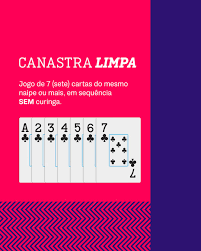

O jogador deverá pegar a carta de cima do lixo, pô-la de lado, baixar as cartas da mão a serem utilizadas e, só após, recolher as demais cartas do lixo, diretamente a mão ou virando-as para baixo. Se a dupla que já pegou o morto tornar a bater, terminará a partida. Para isso precisa-se de pelo menos uma canastra limpa..
A *canastra limpa* é uma sequência de 7 cartas ou mais do mesmo naipe, sem a utilização de curingas¹. Em contraste, a **canastra suja** é formada com a inclusão de um ou mais curingas¹. Na pontuação, a canastra limpa vale 200 pontos, enquanto a canastra suja vale 100 pontos¹
Você pode personalizar a animação das cartas, adicionar mais funcionalidades e ajustar o layout conforme necessário.
Você pode personalizar a animação das cartas, adicionar mais funcionalidades e ajustar o layout conforme necessário.